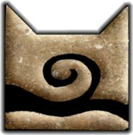

Introduction
Windclan is a friend of Thunderclan, and their leader, Tallstar, is known to be noble, and wise. Their territory is located on an open moorland, with heather and bracken. They are known to be fast, and feast mostly on rabbits.
Windclan's symbol:

Windclan Characters
Tallstar

Breed: Black and white tom
Role: leader, Starclan resident
Mentor: unknown
Apprentice: unkown
Deadfoot

Breed: Black tom
Role: deputy, Starclan resident
Mentor: unknown
Apprentice: unknown
Barkface

Breed: Dark brown tom
Role: Medicine cat
Mentor: unknown
Apprentice: None
Mudclaw

Breed: Dark brown tom
Role: warrior, deputy
Mentor: unknown
Apprentice: Webfoot
Onewhisker

Breed: Light brown tom
Role: warrior
Mentor: unknown
Apprentice: Whitetail, Gorsepaw
Morningflower

Breed: Tortoiseshell she-cat
Role: queen, warrior
Mentor: unknown
Apprentice: unknown
More
Warriors
Tornear, Runningbrook, Webfoot, Tawnyfur
Queens
Ashfoot, Whitetail
Apprentices
Gorsepaw
Elders
Crowfur